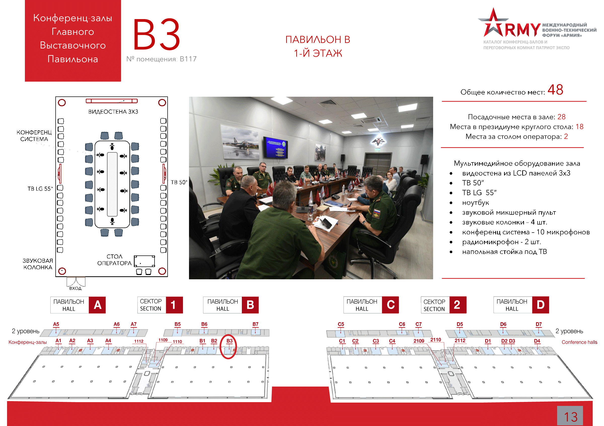

: 24.08.2020
: 15:30 - 17:00
: Конференц-зал B3
: Ассоциация развития кластеров и технопарков России, Федеральный проект «Локомотивы роста»
: Ольга Сачкова, Тел: +7 (499) 277-00-04, e-mail: info@akitrf.ru
Эффективным механизмами реализации промышленной политики в гражданских отраслях стали промышленные кластеры и технопарки. Они позволяют формализовать кооперационные связи между предприятиями – от сырья до конечной продукции, выявить потребность в улучшении существующих или применении новых технологий и решений, а также снизить себестоимость производства конечной продукции. На круглом столе будут рассмотрены особенности реализации программ диверсификации с применением промышленных кластеров и технопарков, включая обсуждение следующих вопросов:
Модератор: Шпиленко Андрей Викторович – Директор Ассоциации кластеров и технопарков России
